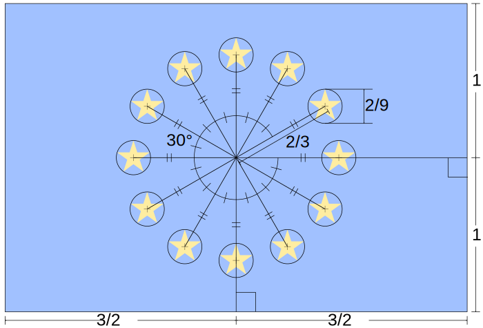

die Entstehungsgeschichte der EU
Gleiderung
die Vorgeschichte
die Verträge
die Flagge
die EU heute
die Vorgeschichte
die Verträge
die Flagge
die EU heute
die Vorgeschichte
- Ende des 2. Weltkrieges
- Krieg soll in Zukunft verhindert werden durch
- gemeinsame Regulierung von Ressourcen
- Kontrolle und gemeinsame Absprache
- die WU entsteht
die Vorgeschichte
die Verträge
die Flagge
die EU heute
die Verträge
- die EU entsteht langsam mit verschiedenen Verträgen
die Verträge
Brüsseler Pakt
- Unterzeichnet: 1948
- in Kraft getreten: 1948
- Beginn WU
- Frankreich, Großbritannien und Benelux-Staaten
die Verträge
Vertrag von Paris
- Unterzeichnet: 1951
- in Kraft getreten: 1952
- Beginn EGKS
die Verträge
Pariser Verträge
- Unterzeichnet: 1954
- in Kraft getreten: 1955
- WU --> WEU
die Verträge
Rom
- Unterzeichnet: 1957
- in Kraft getreten: 1958
- Beginn EURATOM
- Beginn EWG
die Verträge
Fusionsvertrag
- Unterzeichnet: 1965
- in Kraft getreten: 1967
- EURATOM+EGKS+EWG --> EG
die Verträge
Einheitliche Europäische Akte
- Unterzeichnet: 1986
- in Kraft getreten: 1987
- Beginn EPZ
die Verträge
Maastricht
- Unterzeichnet: 1992
- in Kraft getreten: 1993
- die drei Säulen der EU entstehen
- Beginn JI
- EPZ --> GASP
die Verträge
Amsterdam
- Unterzeichnet: 1997
- in Kraft getreten: 1999
- JI Läuft aus
- PJZS beginnt
die Verträge
Nizza
- Unterzeichnet: 2001
- in Kraft getreten: 2003
- EGKS Läuft aus
- EGKS+EWG --> EG
die Verträge
Lissabon
- Unterzeichnet: 2007
- in Kraft getreten: 2009
- WEU aufgelöst
- Beginn EU
die Verträge
- die EU entsteht langsam mit verschiedenen Verträgen
- Aktueller stand: 2009
die Vorgeschichte
die Verträge
die Flagge
die EU heute
die Flagge
- 12 Sterne
- Sternfarbe: #fc0 Gold
- Hintergrundfarbe: #039 Blau
die Flagge

die Flagge
die Flagge
- 12 Sterne
- Sternfarbe: #fc0
- Hintergrundfarbe: #039
- Stand: 2008
die Vorgeschichte
die Verträge
die Flagge
die EU heute
die EU heute
Mitgliedsstaaten:
- Belgien
- Bulgarien
- Dänemark
- Deutschland
- Estland
- Finnland
- Frankreich
- Griechenland
- Irland
- Italien
- Kroatien
- Lettland
- Litauen
- Luxemburg
- Malta
- Niederlande
- Österreich
- Polen
- Portugal
- Rumänien
- Schweden
- Slowakei
- Slowenien
- Spanien
- Tschechien
- Ungarn
- Zypern
die EU heute
die EU heute
Brexit
- Austritt des Vereinigten Königreichs aus der EU
- Beginn: 23. Juni 2016
- 51,89 % waren dafür
- seit dem 1. Januar 2021 nicht mehr Teil der EU-Wirtschaft und der Zollunion
Quellen
- Europaflagge Titelfolie
- MrWissen2go Geschichte/Die Geschichte der Europäischen Union I Geschichte
- Kinderweltreise/EU - einfach erklärt! Was ist die EU? Wie arbeitet die Europäische Union? Für Schüler und Kinder
- Irgendwas mit ARTE und Kultur/Wie funktioniert eigentlich die EU? | Karambolage | ARTE
Quellen
- Wikipedia/Europäische Union (lang.: DE/call: 26.01.2021)
- Wikipedia/Europäische Wirtschaftsgemeinschaft (lang.: DE/call: 26.01.2021)
- Wikipedia/Euroflagge (lang.: DE/call: 26.01.2021)
- Wikipedia/Datei:Flag of Europe.svg (call: 26.01.2021)
{kind=link}
Quellen
- EU GIF (call: 26.01.2021)
- Wikipedia/EU-Austritt des Vereinigten Königreichs (lang.: DE/call: 26.01.2021)
{kind=link}